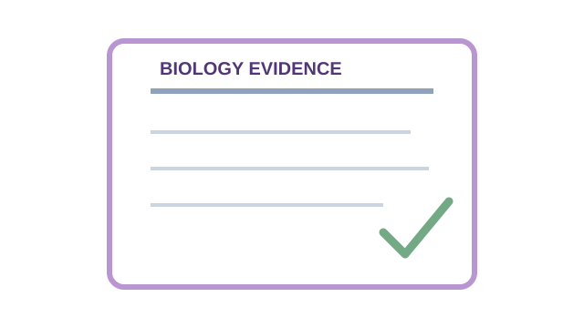
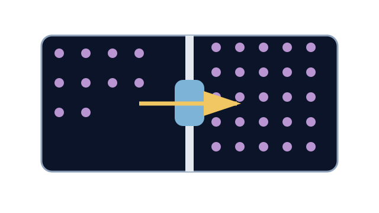

LAUNCH Science · W7L3 · lesson resources
Rehearse the answer shape
Choose one shared task or resource within the current lesson stage. Keep the lesson’s 40-minute timetable and 15-minute independent work.
Assessment choice: the separate full paper is 24 marks and needs a 25-minute slot. Within this lesson’s existing 15-minute independent stage, Q2, Q3 and Q5 provide an 11-mark selection. This is an original classroom assessment, not an official exam paper.
We Do · Rehearse the answer shape
This is practice. Keep assessment Q2, Q3 and Q5 for your own first attempt.
- Explain why thin alveolar walls help gas exchange.
- Name the command word.
- Choose the cause and the consequence.
Discuss, point, write or dictate your first reason. Use one example first; extend only if there is time.
Reveal shared reasoning after an attempt
Explain needs a scientific cause linked to a consequence.
Thin walls give a short diffusion distance, so oxygen diffuses into blood more quickly down its gradient.
Now use your own reasoning for the independent questions.
This page keeps your writing while it stays open. It does not save or send it.
Model explanation and diagram

This is original low-stakes classroom assessment, not an official Pearson paper and not a grade predictor. Use agreed access arrangements and keep results private.
Watch for: A 25-minute paper cannot fit inside a 10-minute Independent Task. The main lesson uses a selected short set; the complete paper is a separately scheduled option.
Give a smaller support cue
Choose one real answer. Underline the part you will improve. Write the change in your own words and say why it is clearer.
Optional video · Active transport
Watch for: What two clues distinguish active transport from diffusion?
Use a short relevant extract within I Do, then pause for an explanation. The clip replaces part of the modelling time.
Open the freesciencelessons video in a new tab
No-video version · use the same question

Active transport causes net movement against the concentration gradient and requires energy released by respiration. The cell type alone does not prove the mechanism.
Internet is needed for the optional clip. It is concept teaching; viewing it is not completion of a practical.